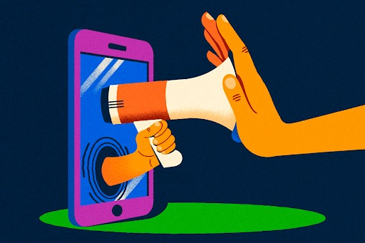
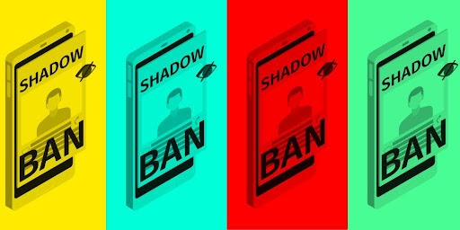
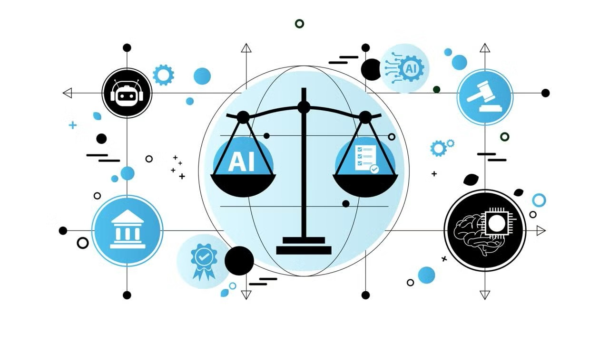

The Algorithm Will Be Televised
ENGW-104-27: Writing For Your Life: Identity, Space, and Place

The practice of a social media platform subtly reducing a user's content visibility without their knowledge, often in response to spammy, abusive, or guideline-violating behavior.
There have been many cases of Black creators being silenced for the content they posted, for example, TikTok shadowbanning half the Black creators with the Black Lives Matter movement.
It’s a virtual interactive experience inspired by the legacy of the National Association of Black Journalists (NABJ). Our focus is on how algorithms shape what we see, believe, and share; especially when it comes to Black voices. In today’s world, activism, identity, and truth all exist online, but algorithms decide who gets heard and who gets hidden. Black creators and journalists are often shadowbanned, misrepresented, or completely buried by biased systems. In other words, the algorithm edits the revolution. Our digital project would explore this through a satirical and creative lens. We plan to design a virtual courtroom experience called “The People vs. The Algorithm.” In this imagined trial, the Algorithm (played by one of us) is put on trial for crimes against truth, with witnesses like “shadowbanned posts” and “deepfake journalists” taking the stand. The prosecution would represent the spirit of NABJ reporters, fighting misinformation with facts, history, and evidence.

Source (https://carleton.ca/news/story/biased-algorithms-moderation-censoring-activists/)
The article gives an example: after Red Dress Day (May 5) — which raises awareness for Missing and Murdered Indigenous Women and Girls (MMIWG) — Indigenous activists and supporters found posts about MMIWG on Instagram had disappeared from their accounts. Creators reported that although Instagram responded by saying it was a “widespread global technical issue,” not all stories were affected, indicating uneven impact. User-reporting → moderation: content flagged by users, then reviewed by moderators under community standards. This is problematic for marginalized groups because their reclaimed language (e.g., gang-style, resonant activism speak) can be misinterpreted as violation of rules. Algorithmic bias example: A 2019 study found tweets written in African American English were up to twice as likely to be flagged as offensive compared to other dialects. Due to the “algorithm” of these mechanisms, Black and racialized creators/activists are disproportionately impacted — their content may be removed, hidden, or wrongly flagged. Their voices can be “edited out” by algorithms that don’t understand context, dialect, culture, or the activism framing.

The National Association of Black Journalists (NABJ) is a professional organization founded in 1975 to support, develop, and advocate for Black journalists, media professionals, and storytellers across the United States.
1.Joy Buolamwini – Founder of the Algorithmic Justice League
“Who gets to be seen, and who gets disappeared by the algorithm?” Joy is saying algorithms act like gatekeepers, deciding who gets attention and who is pushed to the bottom — often disproportionately affecting Black people, women, and marginalized groups. “The coded gaze can deepen the inequalities it claims to fix.” So even if tech companies claim algorithms will “fix” bias or make things fairer, Joy warns that they can actually make inequality worse. “Machines are not neutral. They reflect the priorities of the people who build them.” So machines can appear neutral but actually amplify the worldview of the people behind them.
2. Co-founder Norman B. Sims
“We came together because we knew the stories of Black America were not being told fairly or fully.” When systems decide who gets seen and who gets hidden, Black voices are often the first to disappear — which is why new forms of accountability and representation are necessary.
Welcome to the vault! Click each segment to view more in detail.
A simple introduction to how biased algorithms are created, how they spread misinformation and how these systems disproportionately silence Black voices online.
Firsthand accounts from creators who experienced sudden drops in reach, unexplained content limits, and the steps they took to document and appeal those actions.
Case studies and visualizations that reveal engagement drops, removal patterns, and statistical evidence of uneven enforcement across different creator communities.
Curated moderation logs, policy excerpts, and annotated appeals that help trace how decisions were made and where transparency is lacking.
Practical guides, reporting templates, and community strategies for journalists and creators to protect narratives and respond to algorithmic erasure.
Interactive demos and breakdowns of synthetic media, detection tools, and conversations about the ethical risks these technologies pose to credible reporting.
Sign up to stay informed and get involved in the movement for algorithmic justice.